Nyzo 630: JSON numerical improvements
Nyzo version 630
(commit on GitHub) improves serialization of numerical values to JSON and deserialization of
numerical values from JSON.
This version affects the documentation server and client.
In the Json.parseJsonArray() method, the '-'
character is now considered as the beginning of a numerical value. This allows proper parsing of negative numbers.
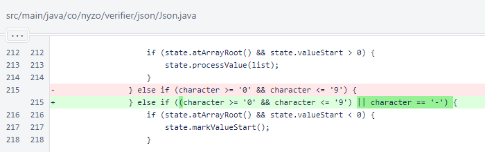
In the JsonArray class, the objects list is now
marked final because the class is immutable.
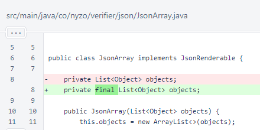
The getInteger(), getLong(),
toIntegerArray(), and toLongArray()
methods were added to the JsonArray class for convenience when dealing with
numerical values or arrays.
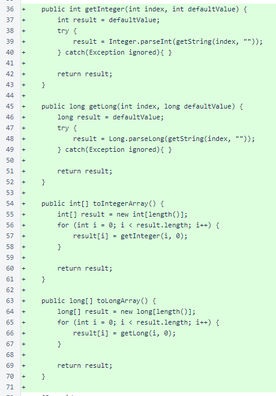
In the JsonObject.getDouble() method, more characters are now filtered
out to allow a wider range of values to be easily extracted.
The JsonObject.getStringList() method, which was unused, was
removed.
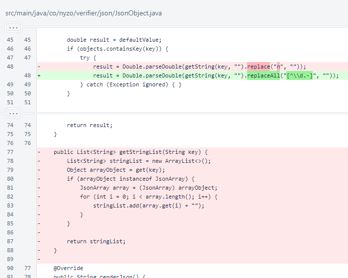
In the JsonRenderer.toJson() method, numerical values are no longer
wrapped in quotes.
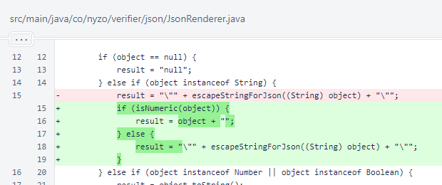
Also in the JsonRenderer.toJson() method, primitive
int and long arrays are now serialized with the
JsonRenderer.jsonForArray() method.
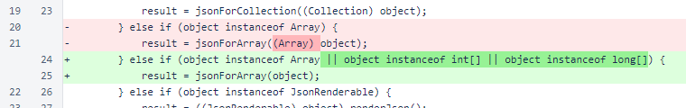
The signature of the JsonRenderer.jsonForArray() method was changed
to support primitive arrays.
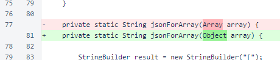
The JsonRenderer.isNumeric() helper method identifies values that can be
safely serialized as numbers.
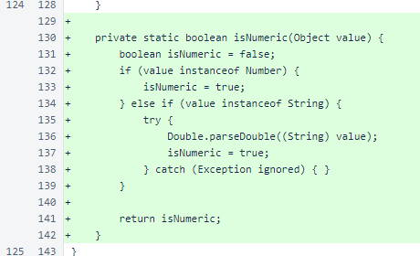
The JsonTest.run() method now tests numerical arrays.
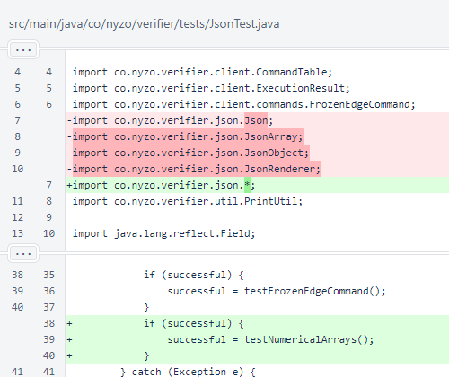
Some cases were added to the JsonTest.testDeserialization() method to
cover the changes to the JsonObject.getDouble() method.
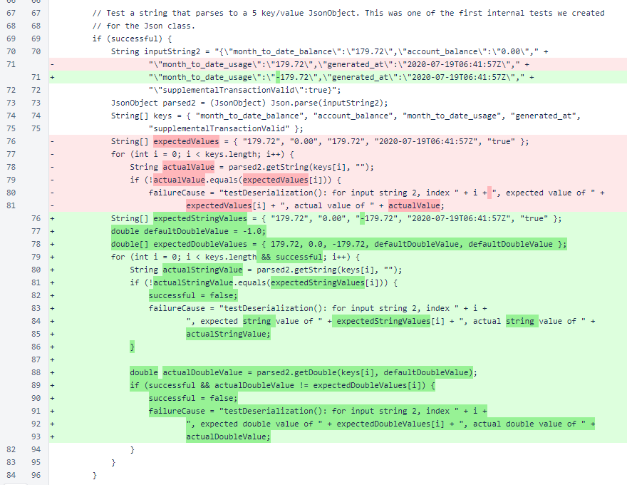
The JsonTest.testNumericalArrays() method calls the
testIntegerArray() method and the
testLongArray() method.
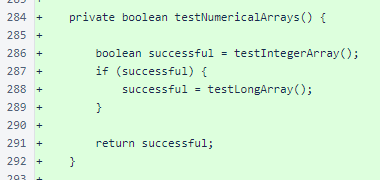
The testIntegerArray() method defines an array of integers containing the
minimum and maximum values that can be stored in an integer along with some values of smaller magnitude. The method
serializes the array to JSON and checks that the JSON string is as expected. The method then deserializes the JSON
string and checks the values against the original array.
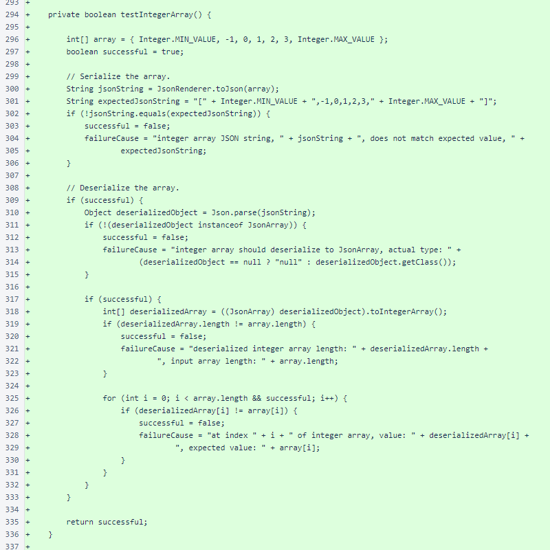
The testLongArray() method follows the same pattern as the
testIntegerArray() method, substituting a long
array and long values for the int array and
int values.
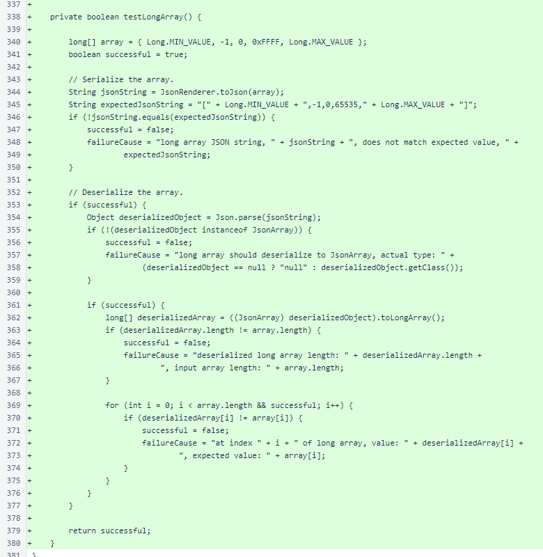